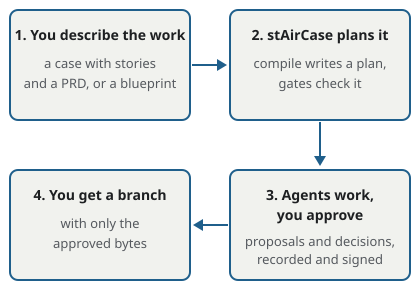

stAirCase
AI agents propose. You approve. Only what you approved is committed, and you can prove it.
AI coding agents are fast, but it is hard to know exactly what they changed, who agreed to it, and whether what was committed is what was reviewed. stAirCase sits between AI agents and your repository:
- the agents work in a separate copy of your repository, never in your checkout;
- every change they want to make is a proposal that waits for a decision, by you or by a rule you wrote;
- at the end, stAirCase commits exactly the approved bytes on a new branch, and nothing else;
- every decision is recorded on a tamper-evident audit chain, and the commit carries a signed change certificate that anyone can verify and rebuild: from the base commit and the approved proposals, anyone can reproduce the commit's exact tree.
It is one program with no dependencies except git (and ssh-keygen, if you sign decisions or reviews with SSH keys). Your agent setup, plans and evidence live in a workspace outside your repositories.

Choose a workflow
Each way in reaches a different change assurance level (CAL). The level a change actually reached is recorded in its certificate, and a lower level is never shown as a higher one.
-
Governed CLI runs
Put
staircasein front of Claude Code, Codex or stAirCase's own agents. Every change is decided before it happens.CAL 3 when every action was decided before it ran; CAL 2 when an approved shell command ran without a sandbox.
-
Working while you are away
Start a task, leave, and come back to one decision. Also for sessions another program starts.
The certificate records the level reached; a change made with a declared command or an approved MCP tool call reaches CAL 2.
-
Review after, and seal
For cloud agents' pull requests and for agents that edit your checkout (Cursor): only the files you approve are committed.
CAL 2 because the files were changed before anyone decided them.
-
CI verification
A required check that refuses pull requests whose commits are not properly certified, with a minimum level.
Requires a minimum level (
min-cal): it checks a level, it does not raise one. -
Team governance
Rules, trusted keys and blueprints from one governance repository, pinned in every workspace, and two-person review.
CAL 4 when a trusted reviewer, who is not the person the run was made for, signs a CAL 3 change.
-
Evidence inspection
Verify a certificate, rebuild a commit from its approvals, export and verify the signed audit chain, report across repositories.
Shows the level each change reached, and fails a commit that holds bytes nobody approved.
Start
- See the whole flow once, offline, with no API key: the sample demonstration. It uses a stand-in model, so it is a sample, not a governed run of your code.
- Install stAirCase: install guide for v1.1.0.
- Your first real run, and onboarding a project: first run guide for v1.1.0, in about 15 minutes.
Know the limits
stAirCase controls what reaches your repository, and confines what agents do on your machine:
| What | Where it runs |
|---|---|
| Edits and reads | only through stAirCase's tools, only inside the run's own worktree |
| Shell commands and checks | an OS sandbox (macOS sandbox-exec, Linux bubblewrap or Landlock, Claude Code's own sandbox): no network, writes only in the worktree, no access to your credentials or stAirCase's keys; --sandbox required refuses to run without one |
| The agent program itself | as your user (Claude Code, Codex, or stAirCase's runtime); for stronger isolation, run stAirCase in a container or VM |
| Agents that edit your checkout (Cursor) | outside stAirCase until you seal their staged changes (CAL 2) |
| What the agent reads, and what the model provider receives | not confined: a run sends code to your model provider, and a sandboxed command can read files you can; pick a confidentiality profile |
stAirCase is not a code reviewer: it makes sure you reviewed and approved every change, and proves that you did. Whether the change is good is still your judgement. Read the safety boundary before you use it on a project you care about.
Status
stAirCase is at 1.0: its six interfaces follow semantic versioning (compatibility). The agent adapters are not part of that promise: governing Claude Code and Codex is marked experimental, and Gemini CLI and OpenCode are still experimental. The compatibility table says which agent versions have actually been run, and how.